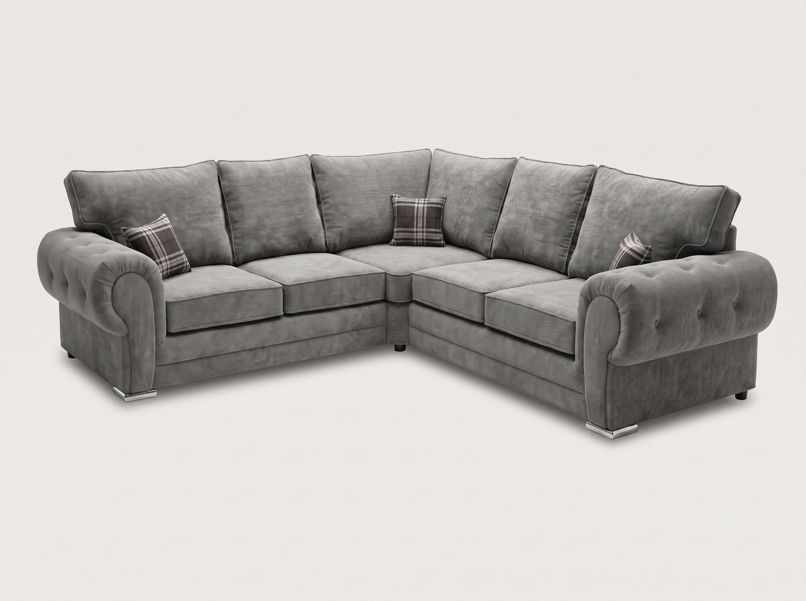

The short version
Yes, you can put a corner sofa in the middle of a room. It works well when the room is big enough to walk around it, when the back of the sofa looks good from behind, and when the sofa is facing something worth looking at.
| Works well | Usually a struggle |
|---|---|
| Open-plan living and dining rooms | Small lounges under about 3.5m wide |
| Large rooms where the sofa would otherwise feel lost against the walls | Rooms where the only route to a door would run behind the sofa in a tight gap |
| Rooms with radiators, doors or windows on every wall | Sofas with a plain or unfinished back |
When a floating corner sofa makes sense
The most common reason is an open-plan room. A corner sofa placed in the middle, with its back to the kitchen or dining area, creates a clear living zone without building a wall. The sofa itself becomes the divider.
The second is a large lounge. When every piece of furniture is pushed against the walls, a big room can feel empty in the middle, and people end up shouting across it. Bringing the sofa forward pulls the seating together around a coffee table or rug.
The third is a room where the walls are already taken: a radiator on one, a bay window on another, doors on the rest. Floating the sofa can be the only way to fit a corner shape at all.
Check the back first
This is the part people forget. When a sofa sits against a wall, nobody sees the back. When it sits in the middle of the room, the back is the first thing you see as you walk in.
- Is the back covered in the same fabric as the front? Some sofas use a cheaper, plainer fabric on the back because they expect it to face a wall.
- Are the outside arms finished properly? On a floating sofa, the side of the arm is on show too.
- Fullback or scatter back? A fullback sofa has a solid, upholstered back that looks tidy from behind. A scatter-back sofa has loose cushions resting against a lower frame, which can look less neat from the rear.
If you are not sure, ask before you order, and ask for a photo of the back. Any good seller will happily send one.
On our corner sofas, the back is covered in the same fabric as the front, so they look finished from every side and are ready to stand in the middle of a room. If you would like to see the back of a particular model, ask us on WhatsApp and we will send a photo.
How much space to leave around it
A floating sofa needs breathing room on every side people will use. As a rough guide:
- Behind the sofa, where people walk: at least 75cm, ideally 90cm. Less than that and the room feels like a corridor.
- Behind the sofa, where nobody walks: 30 to 45cm is enough, for example with a slim console table against the back.
- Between the seat edge and a coffee table: about 40 to 45cm, close enough to reach a mug, far enough to get your legs past.
- Between the sofa and the TV: roughly one and a half to two and a half times the screen size. A 55-inch TV sits comfortably about 2 to 3.5 metres away.
Add those gaps to the sofa’s own size and you will quickly see whether the room can take it. Our measuring guide shows how to take the numbers properly.
Which way should it face?
Point the main seat at the room’s focal point, usually the TV, a fireplace or a window with a view. Then use the short side of the corner to close off the seating area, so it shields the sofa from the walkway or from the dining side of an open-plan room.
That decides whether you need a left-hand or right-hand corner. Stand where you will walk into the seating area and look at the sofa: if the short side needs to be on your left, you need the corner on that side. On a made-to-order sofa you choose this before it is built, so it is worth getting right. If you are unsure, send us a quick sketch of the room on WhatsApp and we will work it out with you.
Making it look intentional
A sofa in the middle of a room can look either deliberate and stylish or as if it has been left there by the removal team. A few things make the difference:
- A large rug. Choose one big enough for at least the front feet of the sofa to sit on it. The rug defines the seating area and stops the sofa from looking adrift.
- A console table behind it. A slim table along the back gives you somewhere for lamps, books or plants, and makes the back of the sofa look finished.
- Lighting. A floor lamp beside the sofa, or table lamps on the console, gives the area its own light. Plan where the plug sockets are before you decide the final position, so cables do not cross a walkway.
- Grip on hard floors. On laminate or wood, a non-slip rug underlay or rubber furniture grips stop the sofa creeping across the floor every time someone sits down.
Which shape floats best?
- L-shape: the easiest to float. The short return closes off one side without taking over the room.
- Corner sofa with equal arms: creates a cosy, enclosed nook, but needs more space around it. Best in larger rooms.
- U-shape: great for dividing a big open-plan space, but only if you have the room. See our corner vs L-shape vs U-shape guide for the space each one needs.
Because our sofas are made to order, the arms can be built shorter or longer to suit the space you have, which often makes a floating layout work in a room where a standard size would not. You can browse corner sofas, L-shape sofas and U-shape sofas, all with free UK delivery and cash on delivery available on most orders.
Common questions
Can you put a corner sofa in the middle of a room?
Yes, as long as the room is big enough to leave a clear walkway around it, usually at least 75cm, and the back of the sofa looks good from behind. It works best in open-plan rooms and larger lounges, where the sofa can divide the space into a seating area.
How much space do you need behind a sofa in the middle of a room?
If people will walk behind it, leave at least 75cm and ideally 90cm. If nobody walks behind it, for example where a console table sits against the back, around 30 to 45cm is enough.
Does the back of a corner sofa look finished?
Not always. Some sofas are made to sit against a wall, with a plainer or lighter fabric on the back. Before you float a sofa, check that the back and the outside of the arms are covered in the same fabric as the front, and ask the seller if you are not sure.
Which way should a floating corner sofa face?
Face the main seat towards the focal point of the room, usually the TV, fireplace or window, and let the short side close off the seating area from the walkway or the rest of an open-plan room.
Will a corner sofa slide around on a hard floor?
It can, especially on laminate or wooden floors. A large rug with a non-slip underlay, or rubber furniture grips under the feet, keeps it in place and protects the floor.